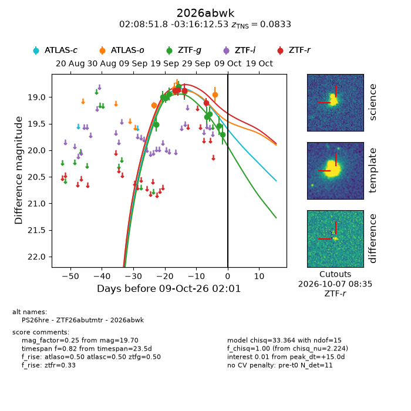
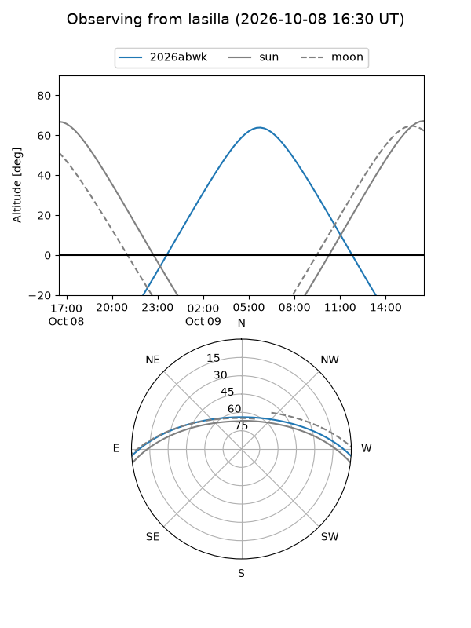
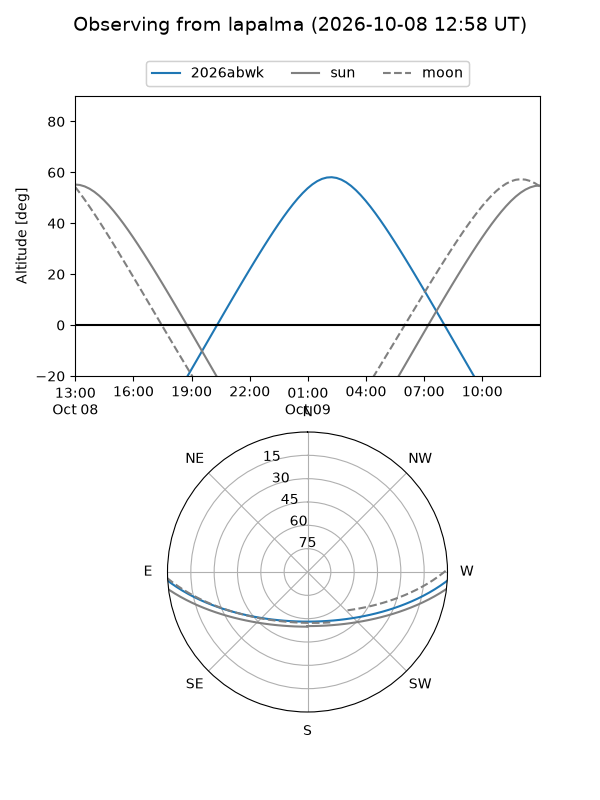
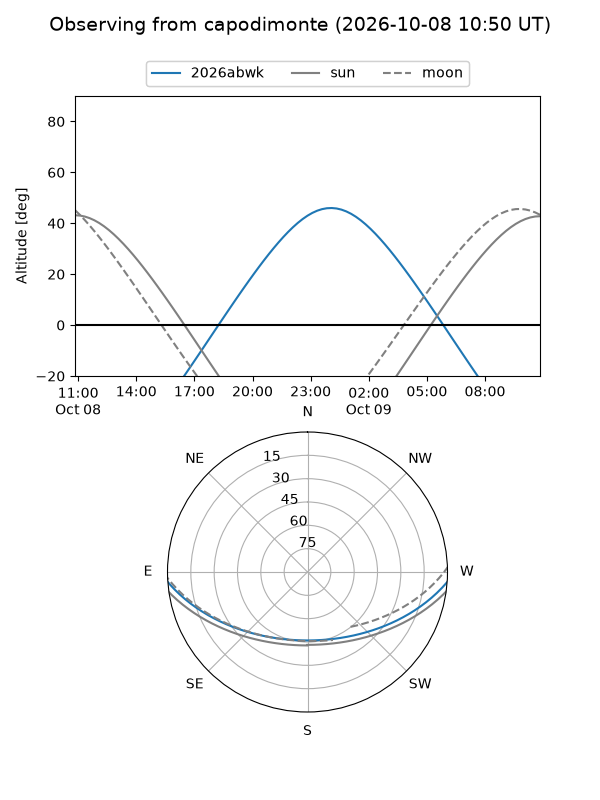
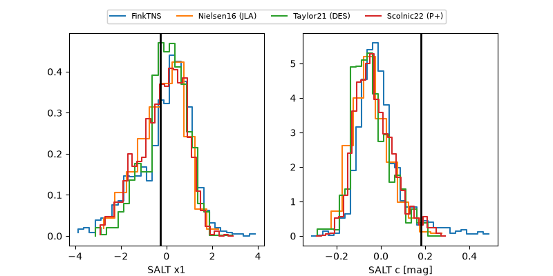

2026abwk
Target 2026abwk at 2026-10-09 02:03
Aliases and brokers:
FINK-ZTF: ztf.fink-portal.org/ZTF26abutmtr
Lasair-ZTF: lasair-ztf.lsst.ac.uk/objects/ZTF26abutmtr
ALeRCE-ZTF: alerce.online/object/ZTF26abutmtr
YSE-PZ: ziggy.ucolick.org/yse/transient_detail/2026abwk
TNS name: wis-tns.org/object/2026abwk
Direct TNS query: direct search
alt names
ZTF26abutmtr (ztf,fink_ztf)
2026abwk (tns,yse)
PS26hre (panstarrs)
Coordinates:
equatorial (ra, dec) = 32.2159,-3.27015
equatorial (HMS+DMS) = 02:08:51.82,-03:16:12.53
galactic (l, b) = (164.0755,-59.80574)
Flags:
TNS type: SN Ia
TNS redshift: 0.0833
peak dt: +15.0
Photometry:
last atlasc=19.51, atlaso=18.95, ztfg=19.70, ztfr=19.10
1 atlasc, 3 atlaso, 11 ztfg, 4 ztfr detections
Lightcurve

Visibility



Additional plots
